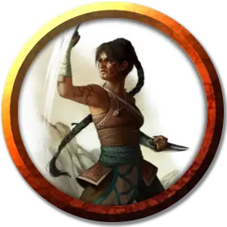

Хеленрей
Hellenrae
Средний Гуманоид (Человек), законно-злой, именной НИП

Класс Доспеха 16
Хиты 78 (12к8 + 24)
Скорость 50 футов
| мод | спас | ||
|---|---|---|---|
| СИЛ | 13 | +1 | +1 |
| ЛОВ | 18 | +4 | +4 |
| ТЕЛ | 14 | +2 | +2 |
| мод | спас | ||
|---|---|---|---|
| ИНТ | 10 | +0 | +0 |
| МДР | 15 | +2 | +2 |
| ХАР | 13 | +1 | +1 |
Навыки Акробатика +7, Атлетика +4, Восприятие +5, Проницательность +5
Иммунитет к урону яд
Иммунитет к состояниям ослепление, отравление
Чувства слепое зрение 60 футов (слепа за пределами этого радиуса), пассивное Восприятие 15
Языки Общий, Терран
Опасность 5 (1800 опыта)
Бонус мастерства +3
Особенности
Уклонение. Если Хеленрей попадает под действие эффекта, позволяющего совершить спасбросок Ловкости, чтобы получить только половину урона, она вместо этого не получает урона при успешном спасброске и получает только половину урона при проваленном.
Ошеломляющий удар (перезарядка 5–6). Когда Хеленрей попадает по другому существу рукопашной атакой оружием, цель должна преуспеть в спасброске Телосложения Сл 13, иначе цель станет ошеломлённой до конца следующего хода Хеленрей.
Защита без доспехов. Пока Хеленрей не носит ни доспехи, ни щит, в её КД включается модификатор Мудрости (уже учтено).
Движение без доспехов. Пока Хеленрей не носит ни доспехи, ни щит, её скорость ходьбы увеличивается на 20 футов (уже учтено).
Действия
Мультиатака. Хеленрей совершает три рукопашные атаки.
Безоружный удар. Рукопашная или дальнобойная атака оружием: +7 к попаданию, досягаемость 5 фт., одна цель. Попадание: дробящий урон 9 (1к10 + 4).
Реакции
Парирование и контрудар. Хеленрей добавляет 3 к её КД против одной рукопашной или дальнобойной атаки, которая должна была попасть по ней. Для этого она должна быть способна почувствовать атакующего своим слепым зрением. Если же атака по ней промахивается, она может совершить одну рукопашную атаку против атаковавшего её, если тот находится в зоне её досягаемости.
Описание
Первый заместитель Марлоса Урнрейла, Хелленрей потеряла своё зрение, ещё будучи ребенком. Обозлённую на жизнь сироту приютил монастырский орден и обучил её использовать остальные чувства, чтобы компенсировать её слепоту. К несчастью, она довела учение монахов о самоотречении и полном очищении разума до крайности. Хелленрей начала искать способ наполнить себя дремлющей тёмной силой, которую чувствовала в земле и скалах вокруг.
Хеленрей выглядит как суровая, неулыбчивая женщина, которая обычно носит серые одежды и золотую маску горгульи без отверстий для глаз.
Она презирает слабость в любой форме и поэтому ненавидит почти всех: даже остальных служителей Чёрной Земли она переносит с трудом.